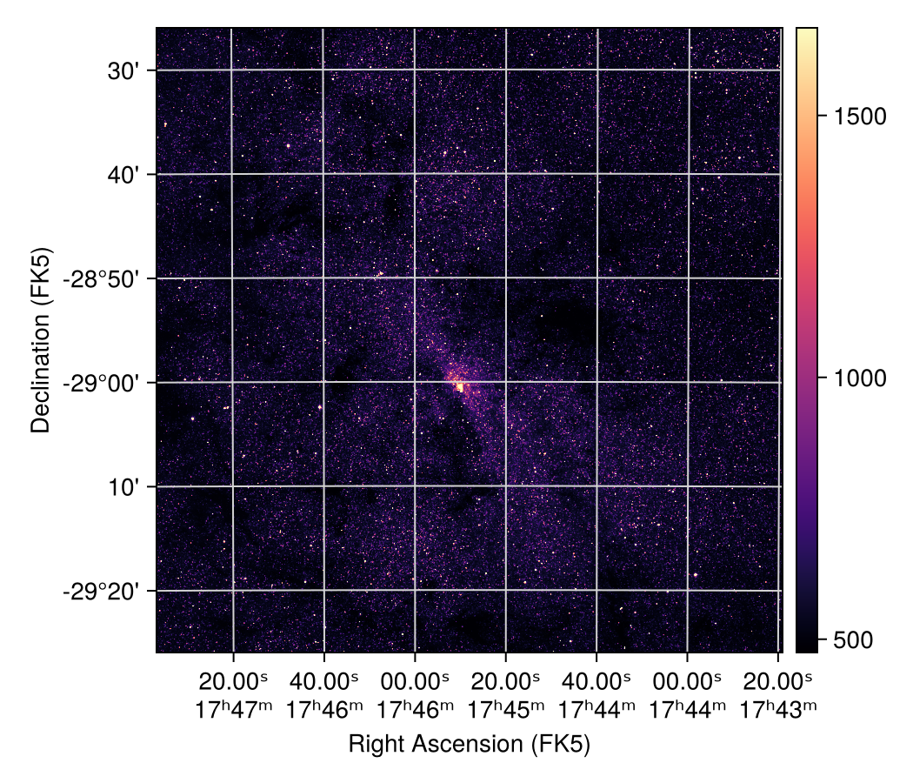
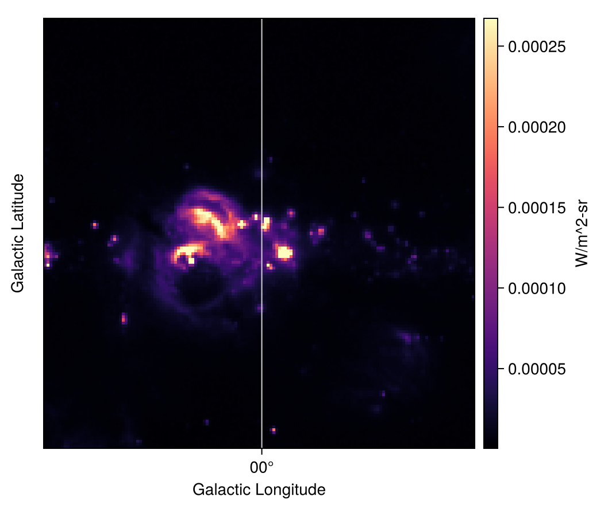
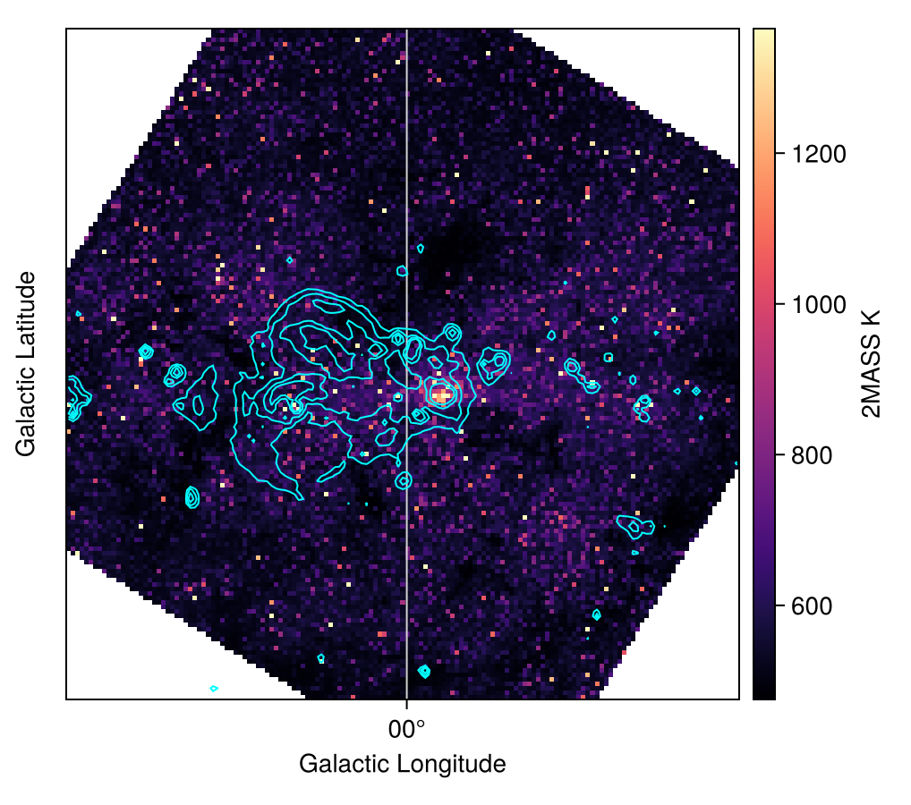
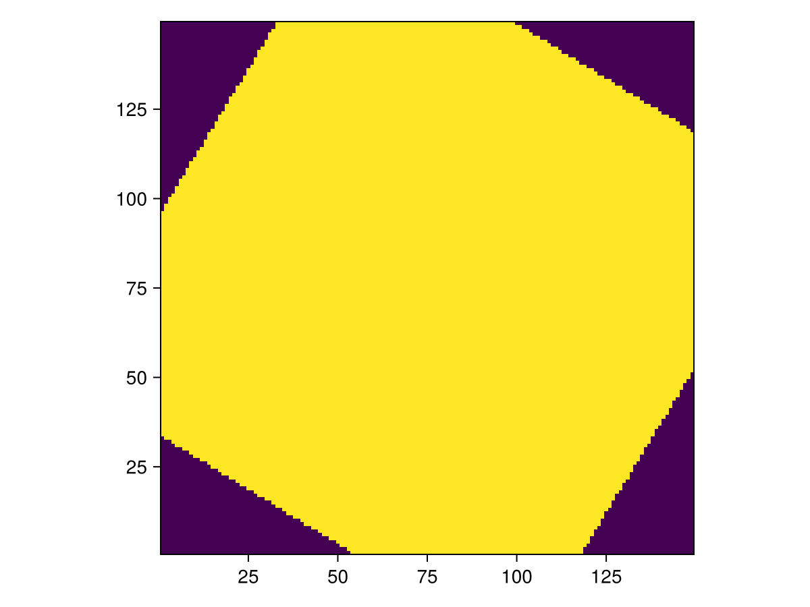
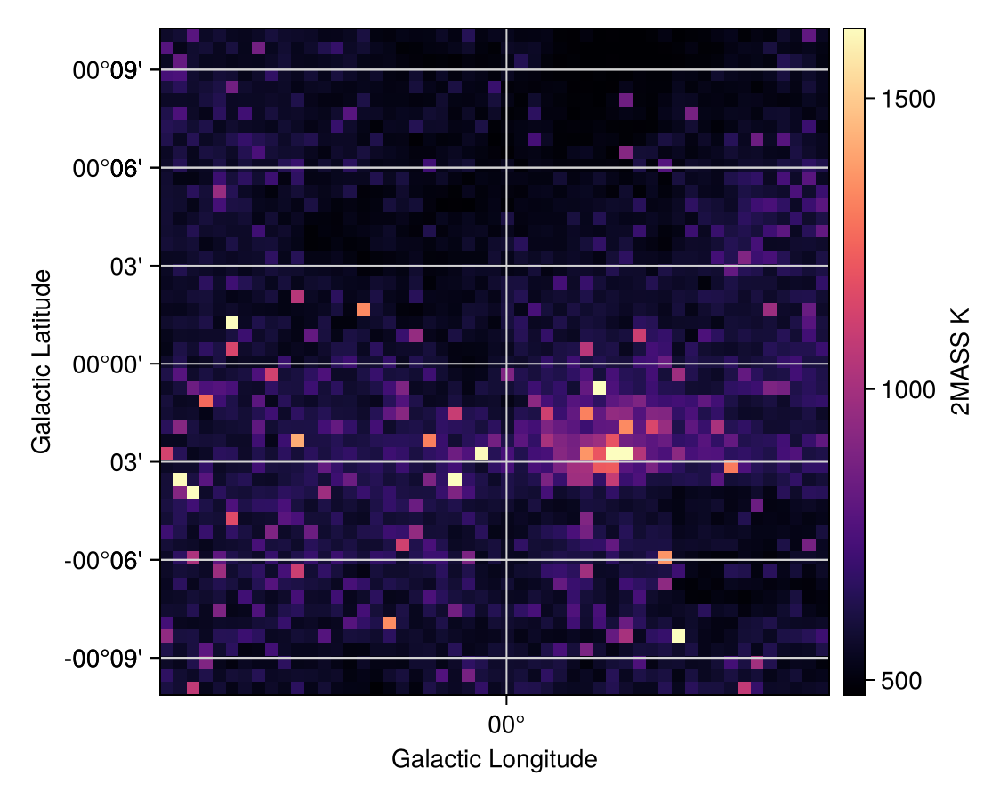

Reprojecting Images
Reprojecting an image resamples it onto a new pixel grid, described by WCS information. This lets us compare images from different telescopes pixel by pixel, or change the coordinate frame (e.g., from equatorial to Galactic coordinates) or map projection of an image.
AstroImages.jl integrates with the Reproject.jl package, which works with AstroImages as soon as both packages are loaded:
using AstroImages, Reproject, CairoMakie
using Downloads: downloadReprojecting onto another image
As an example, we use two images of the Galactic center that also appear in the documentation of the Python reproject package. The first is a 2MASS K-band image in equatorial coordinates (RA and Dec, with a tangent projection):
twomass = load(download("http://data.astropy.org/galactic_center/gc_2mass_k.fits"))
implotview(twomass)
The second is an MSX band E image in Galactic coordinates (with a plate carrée projection):
msx = load(download("http://data.astropy.org/galactic_center/gc_msx_e.fits"))
implotview(msx)
reproject(img_in, img_out) resamples img_in onto the pixel grid of img_out, according to the WCS information of both images. It interpolates img_in at the center of each output pixel, and returns the reprojected image along with a footprint, which marks the output pixels that fall within img_in:
twomass_gal, footprint = reproject(twomass, msx)The reprojected 2MASS image now shares the pixel grid of the MSX image, so the two can be compared pixel by pixel. For example, we can overplot contours of the MSX image directly:
fig, iv = implotview(twomass_gal; colorbar_label = "2MASS K")
contour!(iv.ax, msx; levels = [2.5e-5, 5.0e-5, 1.0e-4, 2.0e-4], color = :cyan)
fig
The reprojected image carries the header of img_out, which describes its new pixel grid. Header keywords about the data itself, such as BUNIT, therefore also come from img_out (here, the MSX image), which is why we label the colorbar ourselves above.
Output pixels outside of the footprint are set to NaN:
heatmap(footprint; axis = (; aspect = DataAspect()))
By default, reproject interpolates bilinearly. Pass order = 0 for nearest-neighbor or order = 2 for quadratic interpolation instead, e.g., reproject(twomass, msx; order = 0).
Cutouts and slices
An AstroImage keeps track of where a cutout or slice of a larger image comes from (see Dimensions and World Coordinates), and reproject uses the pixel grid of the cutout itself. For example, we can reproject the 2MASS image onto just the central region of the MSX image:
twomass_center, _ = reproject(twomass, msx[50:100, 50:100])
implotview(twomass_center; colorbar_label = "2MASS K")
Cutouts work as the input image too. The same goes for a single channel or a moment map of a spectral cube, as long as the slice keeps both celestial axes of the cube.
Other inputs and outputs
Reproject.jl also reprojects FITS files, HDUs, and data with a WCSTransform from FITSWCS.jl, and these can be mixed with AstroImages. For example, reproject(twomass, wcs; shape_out = (200, 200)) reprojects the 2MASS image onto a 200 × 200 pixel grid described by the WCSTransform wcs, and returns the reprojected data as a plain array. See the Reproject.jl documentation for more.